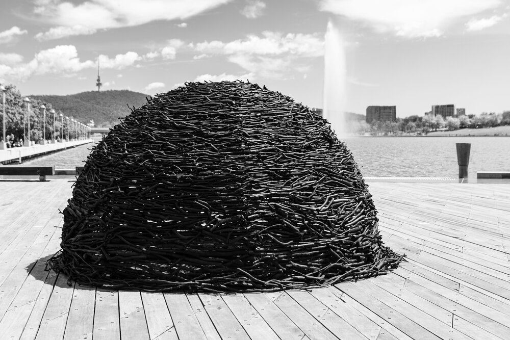
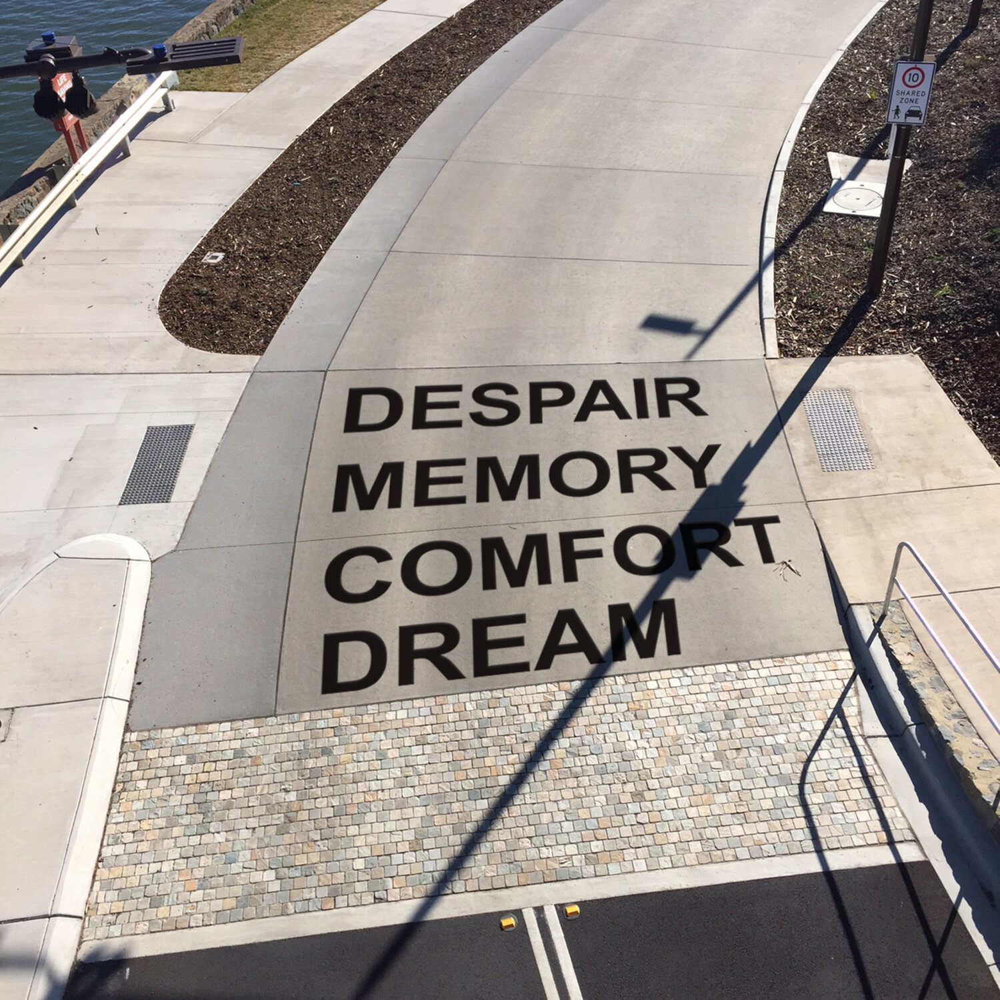

contour 556 is back!
transformed for 2022 with 3 new locations
say hello to the
canberra art biennial
contour 556 - Lake Burley Griffin
contour 656 - The National Arboretum
contour 606 - University of Canberra
canberra art biennial acknowledges the Ngunnawal people
The traditional custodians of the land on which we
live, work, rest and play
Previous works from contour 556


